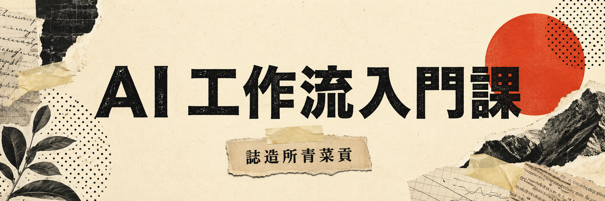

給 創作者與小型工作者 的 AI 入門課
帶你把腦中的想法整理清楚，學會怎麼 描述需求、修正方向
讓 AI 跟你之間，不再一直答非所問。
你會不會跟 AI 溝通，
才是重點。
對這個未知的它，
我們一起來認識。
從常見平台、觀念
到工作流程，
慢慢放進日常裡。
常常一個人身兼 文案、宣傳、客服、資料整理
想開始使用 AI，卻不知道 第一句該怎麼說 的人。
主業 孔版印刷，斜槓一人包工作室一切業務：工作坊企劃、接案、客服與社群經營。
接觸 AI 一年多，持續將自然語言工具應用在實際工作中，包括企劃討論、資料整理、文案撰寫、翻譯、生圖行銷與簡易程式協作。
沒有工程背景，也不是從技術理論出發，而是從 創作者與小型工作者的日常需求 中，一邊使用、一邊測試，整理出一般人也能理解的 AI 溝通方式。